Album — 2010-19
Photos throughout the 2010s. There aren't many so let me know if you would like to contribute to this.
2019 — Winter Arts Festival
Many thanks again to Lorik for these photos.
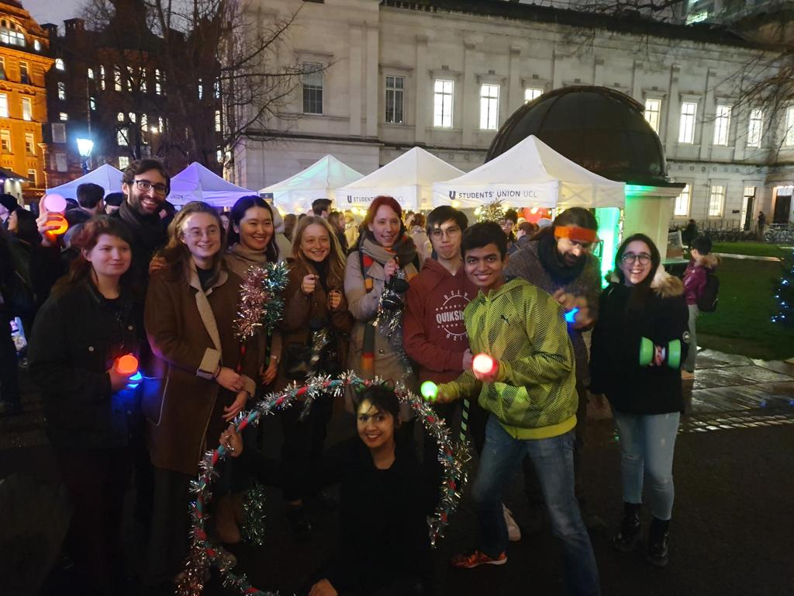 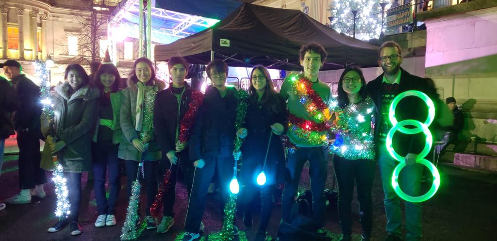 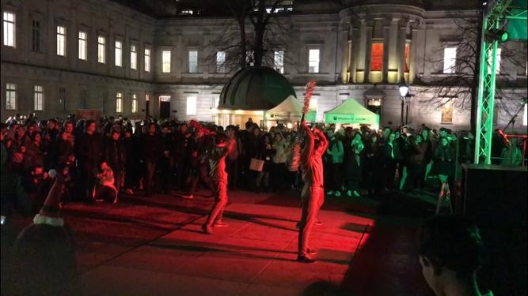2019 — Societies Showcase
Screenshots from recording of the 2019 showcase. You can watch the full video here.
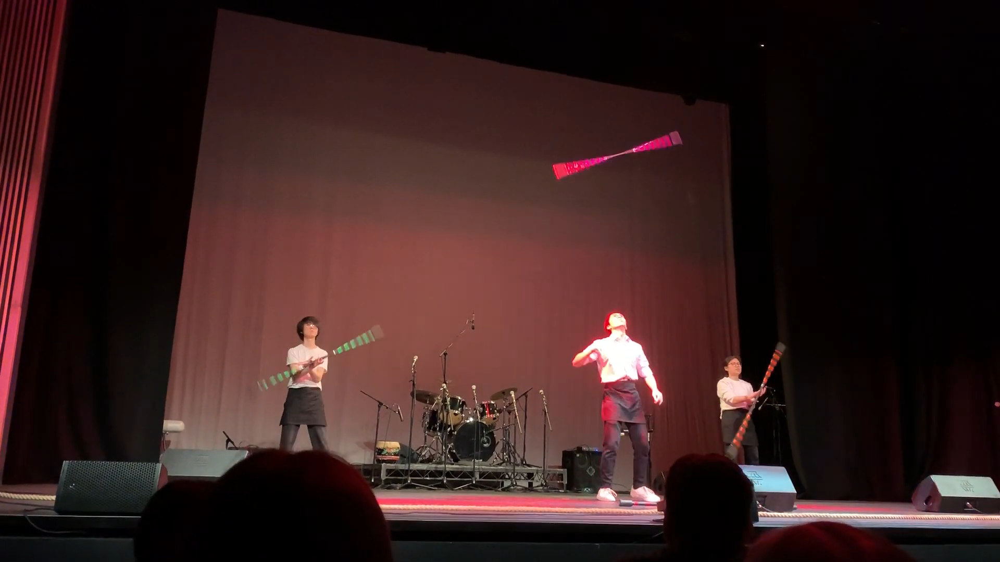 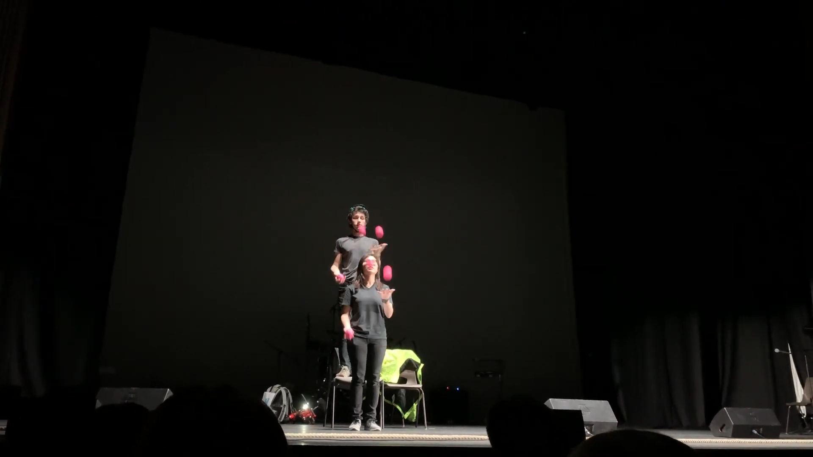 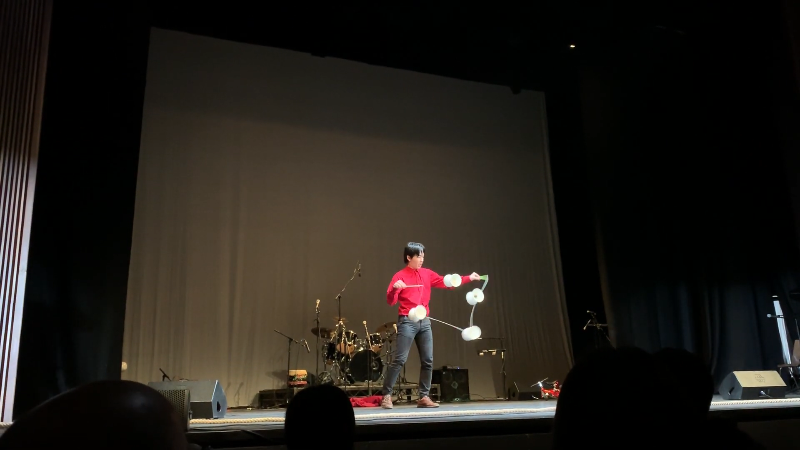 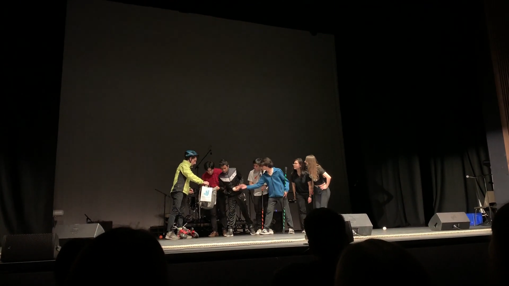2017 — Comedy Gala
Many thanks to Lorik for these photos.
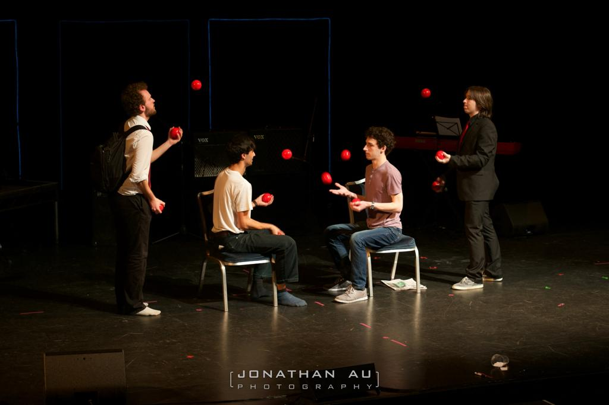 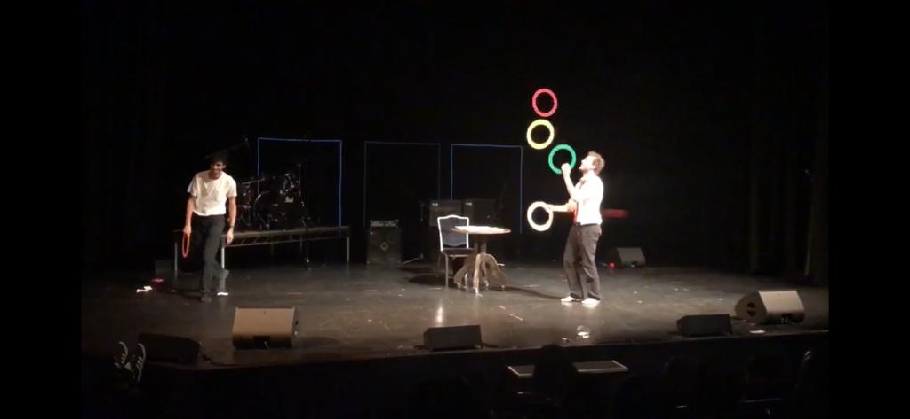2015 — Fire Night (ft. Imperial Juggling)
These are screenshots from and old video from 2015 when we apparently did fire with IC Juggling. I'm sure they didn't have the right paperwork because we're explicitly banned from fire breathing these days. Anyway you can watch the full video here.
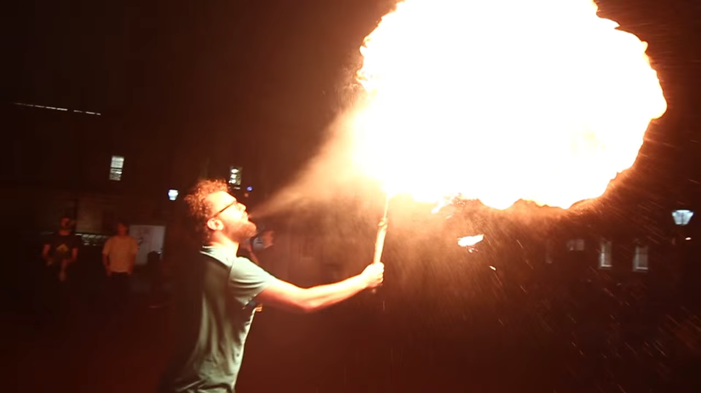 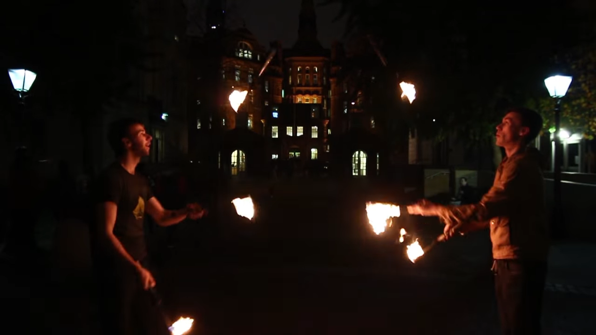 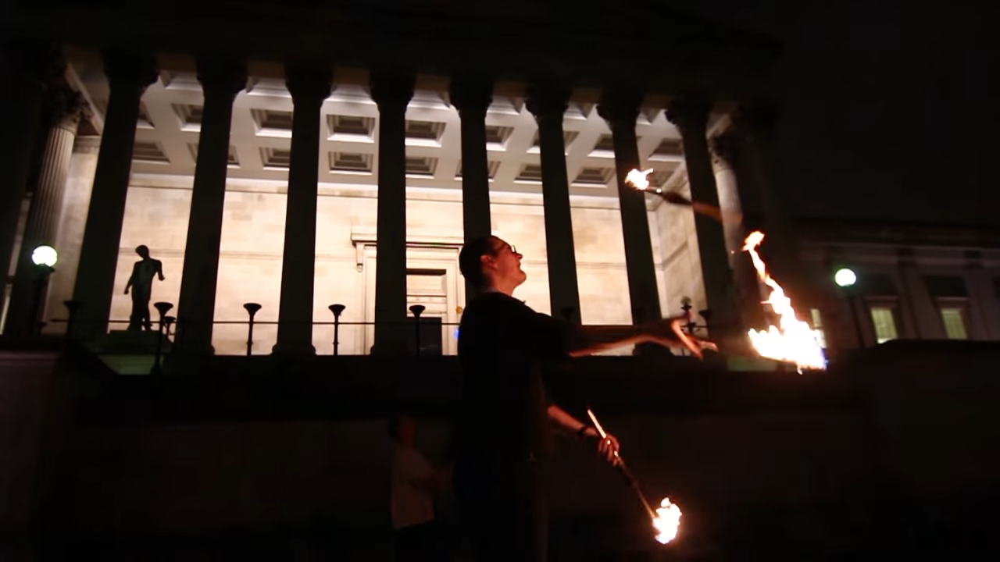